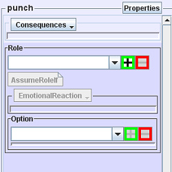

Now let's use the Verb Editor to create some new verbs. When you open the editor, here's what you see:
Right click (option-click on Mac) on "your first verb" and change its name to "punch." Next, right-click on "your first category" and choose "New Verb." Call this second Verb "run away from."
How do we define the details of these Verbs? Like a sentence in normal language, they can contain various parts of speech. To organize these parts of speech in a storywold, we use WordSockets.
WordSockets
Like every normal sentence, every Event includes at least two WordSockets: Subject and Verb. You can add other WordSockets as you feel appropriate for each Verb you create. Every Verb has its own set of WordSockets. (See WordSockets for a detailed description of how they work.)
Let's set up our two Verbs, starting with punch. Select that Verb by double-clicking on it in the pink column on the left. The Verb's label now appears at the top of the second (blue) column.
Click on the "Properties" button at the top of the second column. You'll see punch's properties in a popup:

Right now the emoticube is "null." Choose a more appropriate emoticube from the drop down menu, perhaps "angry" or "threatening" or "fighting."
Note that you've already got the two default WordSockets, Subject and Verb. Since the puncher has to have someone to punch, we need a direct object, or "DirObject" for short. This will always be an Actor. Notice that "3Actor" has been filled in on the left below "Verb." We'll assign the Role of DirObject to 3Actor later on.
If you click on the next drop down box, you'll be offered the choice of "4Actor," "4Prop," "4Stage," etc. (Don't choose anything now.) The number represents the position of the item in the WordSockets list, which determines its position in the sentence the player sees. The word represents its type. This naming method will help you later on when you're scripting the subtle details of the Verb.
Now choose the other Verb, run away from, and edit its properties. You can choose an emoticube if you like, perhaps "fearful." Note that "3Actor" is not automatically added to this Verb's WordSockets. Go ahead and add it, since any sentence using this Verb will take the form "Subject run away from DirObject."
Why don't we just have DirObject as a part of the Verb, instead of creating a WordSocket for an Actor? Because just like in normal language, not every Verb has a direct object. The "Properties" box is designed to give you the maximum possible flexibility in creating Verbs.
Roles
We looked at the Role Editor earlier, and now we're going to use it. A Verb can have none, one, or many Roles, although a Verb with no Roles is rather like a bicycle without wheels. Each Role specifies how an Actor might react to an Event. Different Actors will react to the same Event differently; you create one Role for each of the different Actor-situations.
Creating a Role
Let's create a Role for the Verb punch. Close the Properties box if it's still open. Select punch by double-clicking on its listing in the pink column, then find the word "Role" in the blue column. Just underneath that word is an empty white box; to its right are a green "+" box and a red "-" box. Click on the green "+" box and you'll see "new role" in the white box. Type "punchee" as the name of the Role that you just created. It represents the Actor who gets punched.
Assuming a Role
Below the white box is a button labeled "AssumeRoleIf." This is used to define the conditions under which an Actor would assume that Role. You don't want everybody playing that Role—only the person who gets punched—so you have to specify exactly what constitutes the conditions for assuming the Role.
In this case, it's very simple to define the appropriate condition: the Role should be filled by the Actor who was punched, who is, after all, the DirObject of the Event. So you want to specify that the Role should be filled by the Actor who is the DirObject of this Event.
The way you specify this is, however, a little bass-ackwards. You don't actually tell the Engine, "The Role should be filled by the DirObject." Instead, the Engine looks at each and every Actor in turn and asks, "Should I pick this Actor to fill the Role?" and your specification answers with a simple "yes" or "no." We'll teach you exactly how that's done in a bit.
Emotional Reaction
Below "AssumeRoleIf" is "Emotional Reaction." We're going to skip this part of the Role for now.
Options
Here's where we decide what the Actor playing the Role is going to do in response to the Event.
Obviously, the punchee has a limited set of options when he's punched. He's not going to "whistle Dixie" or "play ping-pong". His set of options should be confined to what is dramatically reasonable. You, the author of the storyworld, must tell the Engine what those dramatically reasonable options are. You do this inside the box labeled "Options" in the blue column.
You'll notice that there's already an Option in that box: "OK." That's a default Option that we automatically add to every new Role when you create the Role; it basically means the actor's OK with what happened. It's not really appropriate for "punchee"—getting punched is not OK—so go ahead and delete it. (To the right of the white box showing "OK," click on the red "-" box.)
Now it's time to add an Option. An obvious choice is "punch"—after all, most men are strong believers in reciprocity, so if one guy punches another, it's likely that the punchee will respond by punching back. So let's add the Verb "punch" to the Options list. To do that, find "punch" in the pink column on the left side of the window, and click ONCE on it. Now simply click in the green box with the plus sign next to the Options box.
Voila! The Verb "punch" has now been added as an Option of the Role "punchee."
Now add the other Verb ("run away from") to the Option list.
When you added a Verb, note that a DirObject WordSocket box appeared underneath the Option. This is for defining the DirObject of the Verb that's a reaction to the original Event Verb. We'll leave this for later.
Beneath the DirObject box, there's a button labeled "Inclination." Again, we won't fill it in yet, but it's important to understand what this does. The Inclination of any Option is a number that tells the Engine how strongly inclined the the ReactingActor is to choose this Option (e.g., how likely an Actor is to punch or run away from another Actor). The Engine will evaluate the Inclinations of all the different Options, and select the Option with the highest Inclination value.
Inclinations are defined by writing scripts. We'll get into the basics of scripting next.
SWAT TUTORIAL
Verbs
Verbs